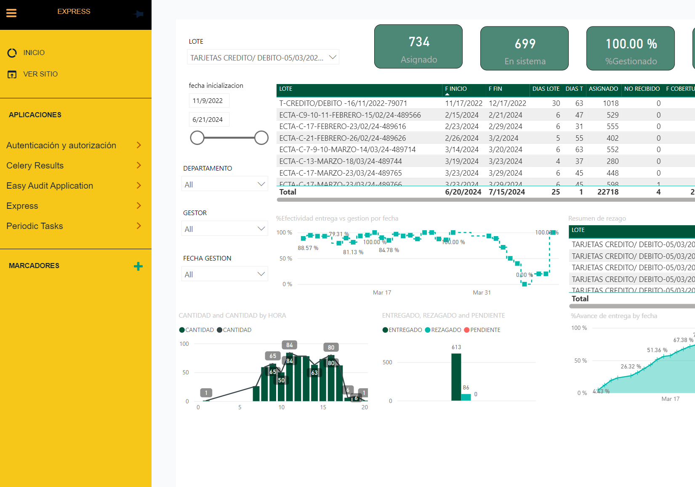

Project Overview
Express is an application designed to enhance efficiency in planning and executing distribution routes. Using machine learning and optimization techniques, we aim to reduce operational costs and delivery times while improving customer satisfaction.

Key Components of the Project
The Express project comprises several critical components:
- models.py: Defines essential data structures supporting the core business logic of Express.
- admin.py: Facilitates efficient data management and visualization through Django's admin interface.
Technologies Used
The Express project leverages a robust stack of technologies, including:
- Python: Used for business logic development and integration with optimization and machine learning libraries.
- Django: Web framework providing a secure and organized structure for our application.
- PostgreSQL: Relational database management system for efficient storage and retrieval of large datasets.
- Machine Learning and Optimization: Advanced algorithms for generating optimal routes based on historical data and real-time conditions.
Benefits and Expected Outcomes
The implementation of Express promises several benefits:
- Cost reduction through optimized routes and efficient resource management.
- Enhanced customer experience by meeting precise and consistent delivery times.
- Improved responsiveness to market demands and operational conditions.